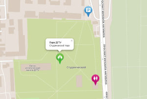

|  |
Студенческий парк Донского государственного технического университета им. Л.В. Красниченко. Располагается около границы Ворошиловского и Кировского районов Ростова-на-Дону.Адрес: г. Ростов-На-Дону, пл. Гагарина, 1 На территории парка расположены учебные корпуса университета, студенческие общежития, спортивные площадки и манеж. Центральные аллеи заасфальтированы и в ночное время освещены. Прогуливаясь по парку можно увидеть много голубей, воробьев и других "городских" птиц около специально оборудованных кормушек. На деревьях также можно увидеть пушистых белок. В центре парка установлен (8.05.1982) памятник преподавателям, сотрудникам и студентам Ростовского машиностроительного института, защитившим Родину в годы Великой отечественной войны. Почти напротив памятника строится Храм святой мученицы Татьяны. Парк не имеет четких границ и неогорожен, но зато достаточно ухожен: вдоль центральных аллей установлены урны и скамеечки, деревья и кустарники подстрижены. Около учебных корпусов можно увидеть красивые клумбы с элементами ландшафтного дизайна. Средний возраст деревьев составляет около 35 лет, поэтому в летнюю городскую жару можно укрыться в тени парка. А для малышей есть детская площадка с турниками и шведской стенкой. На территории парка расположено большое футбольное поле с земляным покрытием и маленькая хорошо оборудованная спортплощадка университета. В теплое время года в парке со студентами проводятся занятия по физкультуре и геодезии. |